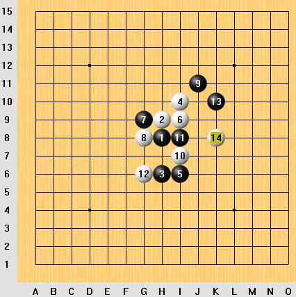
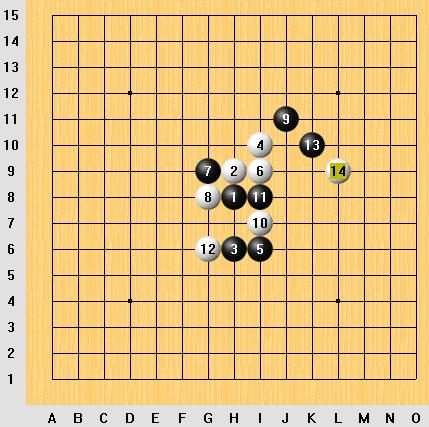
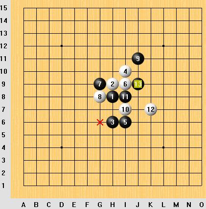
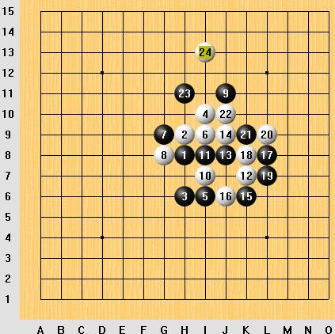
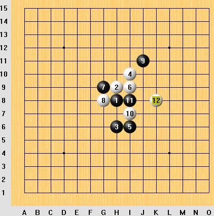
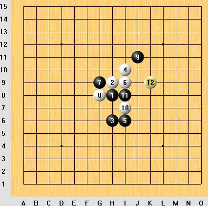
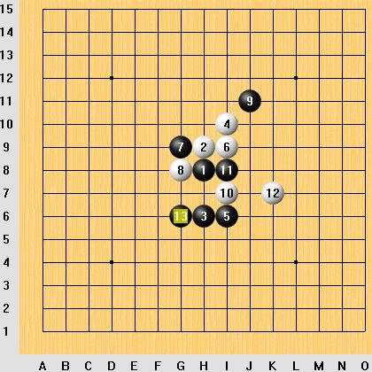

大家预测下看，这次团体比赛的瑞星开局用的最多是哪几个12的 变化？
#1 大家预测下看，这次团体比赛的瑞星开局用的最多是哪几个12的 变化？作者：兔子哥哥 发表时间：2009-5-19 20:09:05

感觉最近这个12出现的好频繁，这次比赛有可能成为热门12！

这个12应该属于很常见的吧，13的应手不外乎这几种，当然也有可能爆冷门13嘿嘿！


这2个属于每次比赛都有那么几盘的吧！欢迎大家跟帖讨论！谢谢！
［ 有志青年 于 2009-5-19 20:57:22 时奖励此帖[金币加 20 威望加1］
#2 Re:大家预测下看，这次团体比赛的瑞星开局用的最多是哪几个12的 变化？作者：无尽 发表时间：2009-5-19 21:03:29
我选团角12，怎么没有呢？ 广东赛的时候局部流行11变……
广东赛的时候局部流行11变……
=======上图对应的爱五子棋谱代码如下，以便你拆解：========
h8h9h6i10i6i9g9g8j11i7i8h10
======================================================
#3 Re:大家预测下看，这次团体比赛的瑞星开局用的最多是哪几个12的 变化？作者：屏蔽 发表时间：2009-5-19 22:45:52
我要连骗七盘……嘿嘿……
#4 Re:大家预测下看，这次团体比赛的瑞星开局用的最多是哪几个12的 变化？作者：陨落之城 发表时间：2009-5-19 23:06:11
=======上图对应的爱五子棋谱代码如下，以便你拆解：========
h8h9h6i10i6i9g9g8j11i7i8g6k10j7
======================================================这个12好想是比较老的变化了吧？
#5 Re:大家预测下看，这次团体比赛的瑞星开局用的最多是哪几个12的 变化？作者：千羽鹤 发表时间：2009-5-20 10:53:23
=======上图对应的爱五子棋谱代码如下，以便你拆解：========
h8h9h6i10i6i9g9g8j11i7i8j9
======================================================
#6 Re:大家预测下看，这次团体比赛的瑞星开局用的最多是哪几个12的 变化？作者：方圆之外 发表时间：2009-5-20 11:01:24
我狠不想开瑞星。。#7 Re:大家预测下看，这次团体比赛的瑞星开局用的最多是哪几个12的 变化？作者：游戏人间 发表时间：2009-5-20 11:27:52
我准备全部开松月#8 Re:大家预测下看，这次团体比赛的瑞星开局用的最多是哪几个12的 变化？作者：方圆之外 发表时间：2009-5-20 11:34:59
 鱼大哥是几台？
鱼大哥是几台？#9 Re:大家预测下看，这次团体比赛的瑞星开局用的最多是哪几个12的 变化？作者：wd1988 发表时间：2009-5-20 12:13:40
这次山口规则，瑞星未必还这么吃香#10 Re:大家预测下看，这次团体比赛的瑞星开局用的最多是哪几个12的 变化？作者：岳麓小棋后 发表时间：2009-5-20 12:16:40
这次全团也跟国际接轨啦，一不小心，RIF就作别西天的云彩了
#11 Re:大家预测下看，这次团体比赛的瑞星开局用的最多是哪几个12的 变化？作者：游戏人间 发表时间：2009-5-20 12:43:48
全团又不是山口规则。。。#12 Re:大家预测下看，这次团体比赛的瑞星开局用的最多是哪几个12的 变化？作者：Solmyr 发表时间：2009-5-20 15:04:34
 国内正规比赛的规则要变成山口规则估计还要过上几年吧！
国内正规比赛的规则要变成山口规则估计还要过上几年吧！#13 Re:大家预测下看，这次团体比赛的瑞星开局用的最多是哪几个12的 变化？作者：流逝 发表时间：2009-5-20 17:33:17
怎么发的那些图我全地毯了 嘿嘿
#14 Re:大家预测下看，这次团体比赛的瑞星开局用的最多是哪几个12的 变化？作者：游戏人间 发表时间：2009-5-20 18:07:36
楼上也被我地毯了。。。#15 Re:Re:大家预测下看，这次团体比赛的瑞星开局用的最多是哪几个12的 变化？作者：屏蔽 发表时间：2009-5-20 18:36:37
引用：
原文由 wd1988 发表于 2009-5-20 12:13:40 :
这次山口规则，瑞星未必还这么吃香
周可鼎在名人战上还不是狂下瑞星，嘿嘿~~